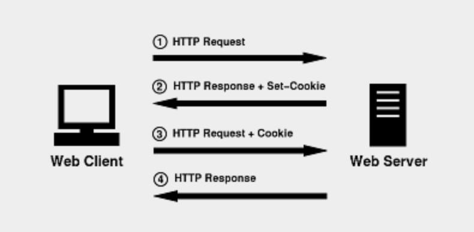

一、Coookie
由于 HTTP 是一种无状态的协议，服务端没有办法从网络连接上判断用户的信息。因此服务端给用户分配一个“通行证”，无论谁访问都必须带上自己的通行证。这样服务端就能够从通行证上确认客户身份了。这就是 Cookie 的工作原理。
Cookie 实际上是一小段文本信息。客户端请求服务端信息时，如果服务端需要记录该用户的状态，就会给客户端发送一个 Cookie，客户端就会把 Cookie 保存起来。当客户端再次请求该网站时，就会把该 Cookie 一同交给服务器。服务器检查该 Cookie，以次来辨别用户状态。服务器也可以根据需求修改 Cookie 的内容。
有了Cookie这样的技术实现，服务器在接收到来自客户端浏览器的请求之后，就能够通过分析存放于请求头的Cookie得到客户端特有的信息，从而动态生成与该客户端相对应的内容。通常，我们可以从很多网站的登录界面中看到“请记住我”这样的选项，如果你勾选了它之后再登录，那么在下一次访问该网站的时候就不需要进行重复而繁琐的登录动作了，而这个功能就是通过Cookie实现的。
有两个http头部是专门负责设置以及发送cookie的,它们分别是Set-Cookie以及Cookie。当服务器返回给客户端一个http响应信息时，其中如果包含Set-Cookie这个头部时，意思就是指示客户端建立一个cookie，并且在后续的http请求中自动发送这个cookie到服务器端，直到这个cookie过期。如果cookie的生存时间是整个会话期间的话，那么浏览器会将cookie保存在内存中，浏览器关闭时就会自动清除这个cookie。另外一种情况就是保存在客户端的硬盘中，浏览器关闭的话，该cookie也不会被清除，下次打开浏览器访问对应网站时，这个cookie就会自动再次发送到服务器端。一个cookie的设置以及发送过程分为以下四步：
1）客户端发送一个http请求到服务器端；2）服务器端发送一个http响应到客户端，其中包含Set-Cookie头部；3）客户端发送一个http请求到服务器端，其中包含Cookie头部；4）服务器端发送一个http响应到客户端。
这个通讯过程也可以用以下下示意图来描述：
Cookie 在性质上是绑定在特定域名下的，不可以跨域访问。
二、Session
Session是另一种记录客户状态的机制，Cookie保存在客户端中，而Session保存在服务端。客户端访问服务器的时候，服务器把客户端信息以某种形式记录在服务器上。这就是Session。客户端浏览器再次访问时只需要从该Session中查找该客户的状态就可以了。
如果说Cookie机制是通过检查客户身上的“通行证”来确定客户身份的话，那么Session机制就是通过检查服务器上的“客户明细表”来确认客户身份。Session相当于程序在服务器上建立的一份客户档案，客户来访的时候只需要查询客户档案表就可以了。